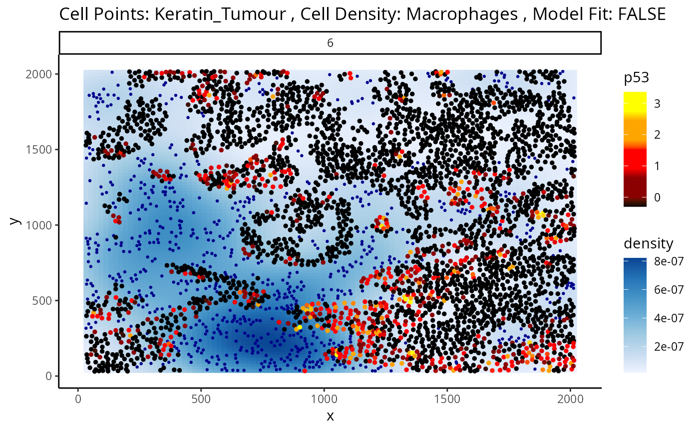
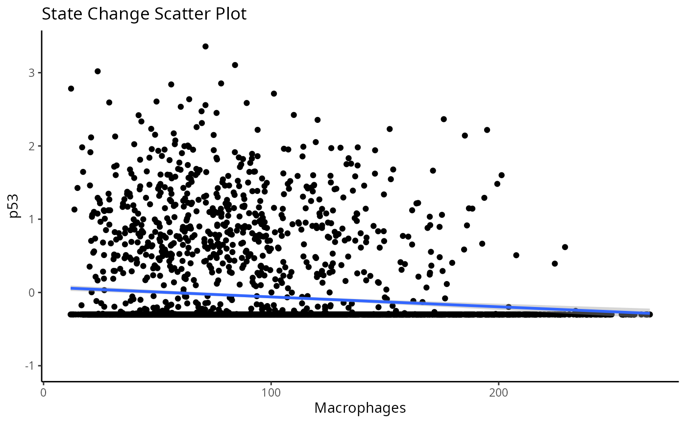

Helper functions to visualise OLS model fits for image based state models
Usage
plotStateChanges(
cells,
image,
from,
to,
marker,
type = "distances",
assay = 1,
cellType = "cellType",
imageID = "imageID",
spatialCoords = c("x", "y"),
size = 1,
shape = 19,
interactive = FALSE,
plotModelFit = FALSE,
method = "lm"
)Arguments
- cells
A SingleCellExperiment that has had distances already calculated.
- image
An image to subset to.
- from
A character indicating the name of the cell type (from the cellType column) whose cell state is being investigated in
- to
A character indicating the name of the cell type (from the cellType column) who may be influencing the cell state of another cell type
- marker
The marker of interest.
- type
The name of the reduced dimension to use for the x-axis.
- assay
Name of the assay that stores the marker expression.
- cellType
The name of the column in colData that stores the cell types.
- imageID
The name of the column in colData that stores the image ids.
- spatialCoords
The names of the columns in colData that store the spatial coordinates.
- size
Aesthetic numerical variable determining the size of the displayed cells
- shape
Aesthetic variable determining the shape grouping of the displayed cells
- interactive
Logical indicating if the output visualisation should be a interactive (plotly)
- plotModelFit
Logical indicating if fitted values should be plotted or actual intensities for marker specified. The default is to plot actual intensities
- method
The method to build the model with. Currently the only option is "lm". However, capabilities may be expanded in the future
Examples
library(dplyr)
data("kerenSCE")
kerenSCE <- getDistances(kerenSCE)
p <- plotStateChanges(
cells = kerenSCE,
type = "distances",
image = "6",
from = "Keratin_Tumour",
to = "Macrophages",
marker = "p53",
size = 1,
shape = 19,
interactive = FALSE,
plotModelFit = FALSE,
method = "lm")
p
#> $image

#>
#> $scatter
#> `geom_smooth()` using formula = 'y ~ x'

#>